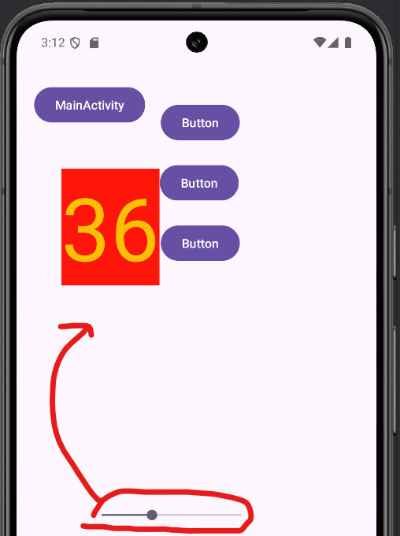
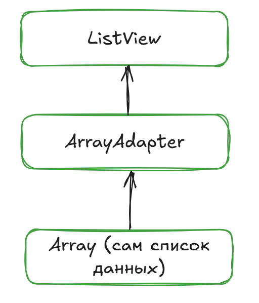
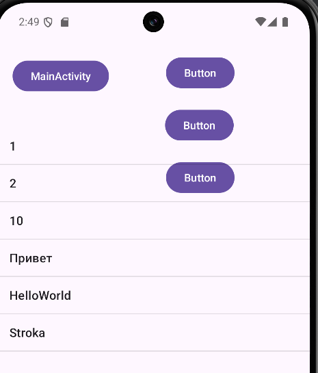

Работа виджетами из Activity
Снова про root класс для всех виджетов.
View
Android SDK включает множество виджетов, которые являются дочерним классом класса View. Таким образом, каждый виджет является экземпляром класса View, как и отражено на рисунке ниже.

Рис. 1. Иерархия класса View. Источник изображения.
{kind=link}
Основные Операции с View
Set Properties - можем задать свойства для каждого объекта класса View и его наследников;
Set focus - “фокусировка” объекта, например, если нужно ввести текст в нужное вам
TextView;Set up Listeners - “навесить” слушателя (
интерфейс) для выполнения необходимых функций\действий при взаимодействии с объектом;Set Visibility - спрятать или показать объект.
Атрибуты (Properties)
Атрибуты View помогают изменять вид элементов на экране. В качестве базовых атрибутов можно перечислить следующие:
id- id объекта;text- текст;visibility- видимость объекта;textSize- размер текста;paddingTop- отступ контента от верхнего края прямоугольника;layout_height/layout_width- высота/ширина виджета;layout_marginTop/layout_marginBottom/…- отступы для различных сторон виджета;background color- задать цвет фонаview.
Управление виджетами из кода Kotlin (один из способов)
По умолчанию, при создании проекта, мы получаем от Android Studio файлы activity_main.xml и MainActivity.kt (при создании проекта можно изменить название). В .xml файле мы уже определили элементы экрана: TextView, Button. Далее, нам нужно научиться взаимодействовать с ними.
При создании первого приложения в Android Studio мы получаем код из листинга №2.
Взаимодействие нашего кода и объектов интерфейса (определенных в файле .xml, далее компилируемые в объекты View).
Для начала, Activity необходимо подружить с элементами в файле .xml. При создании проекта, по умолчанию в Empty Views Acitvity, ресурсы .xml загружаются автоматически:
setContentView(R.layout.activity_main) // activity_main.xml
Именно в этом моменте решается какой именно визуальный интерфейс будет иметь пользовательский интерфейс. В данном случае предоставляется ресурс R.layout.activity_main, что является файлом в папке res/layout/activity_main.xml.
Из листинга №1 можно заметить один важнй параметр элементов экрана -"@+id, идентификатор элемента. Данный идентификатор позволяет обращаться к элементу экрана, который определен в файле .xml.
Для получения элементов класса по id класс Activity имеет метод findViewById().
Finds the first descendant view with the given ID, the view itself if the ID matches getId(), or null if the ID is invalid (< 0) or there is no matching view in the hierarchy.
В этот метод передается идентификатор ресурса в виде R.id - идентификатор элемента, который был создан с файле .xml. Также, необходимо привести возвращаемый тип данных (View) к нужному нам классу (TextView, Button или др.).
Листинг 3. MainActivity.kt (с добавлением виджетов)
class MainActivity : AppCompatActivity() {
// onCreate() – вызывается при первом создании Activity
override fun onCreate(savedInstanceState: Bundle?) {
super.onCreate(savedInstanceState)
enableEdgeToEdge()
setContentView(R.layout.activity_main)
ViewCompat.setOnApplyWindowInsetsListener(findViewById(R.id.main)) { v, insets ->
val systemBars = insets.getInsets(WindowInsetsCompat.Type.systemBars())
v.setPadding(systemBars.left, systemBars.top, systemBars.right, systemBars.bottom)
insets
}
// Инициализация переменных для элементов экрана.
var mTextView = findViewById<TextView>(R.id.textView2)
var bGoToSecondActivity = findViewById<Button>(R.id.go_to_second_activity)
}
}
Таким образом, появляется возможность управлять элементами экрана из кода приложения.
Например, можем поменять содержание текстового элемента (TextView):
mTextView.setText("Hello from code Kotlin!");
Аналогично, можно возпользоваться методом обработки нажатия на элемент View, используя метод setOnClickListener:
bGoToSecondActivity.setOnClickListener({
mTextView.setText("Hello from clicked Button!");
});
Где мы можем увидеть наше новое Activity в списке проекта.
Переход между Activity (Intent, вкратце)
В рамках “удобства” по работе с несколькими Activity рассмотрим небольшой пример работы класса Intent
Intent — это абстрактное описание операции, которая должна быть выполнена. Его можно использовать с startActivity для запуска Activity, broadcastIntent для отправки его любым заинтересованным компонентам BroadcastReceiver и Context.startService(Intent) или Context.bindService(Intent, BindServiceFlags, Executor, ServiceConnection) для связи с фоновой службой Service.
Для начала, нам понадобится только метод startActivity(). Добавим переход на другое Activity при помощи Button во время нажатия (setOnClickListener).
Добавим кнопку в файле activity_имя.xml:
<Button
android:id="@+id/bViews"
android:layout_width="wrap_content"
android:layout_height="wrap_content"
android:text="Views" />
Инициализируем кнопку в коде ИМЯ_Activity.kt, выделяя память под кнопку в методе onCreate(), инициализируя обработчик нажатия на кнопку в методе onResume() (когда Activity уже видна пользователю):
class MainActivity : AppCompatActivity() {
private lateinit var bViewExamples: Button
// onCreate() – вызывается при первом создании Activity
override fun onCreate(savedInstanceState: Bundle?) {
...
...
bViewExamples = findViewById<Button>(R.id.bViews)
}
override fun onResume() {
super.onResume()
bViewExamples.setOnClickListener({
val randomIntent = Intent(this, ViewExamples::class.java)
startActivity(randomIntent)
});
}
Из обработчика нажатия мы видим создание экземпляра класса Intent, используя конструктор public Intent(Context packageContext, Class<?> cls):
val randomIntent = Intent(this, ViewExamples::class.java)
startActivity(randomIntent)
Согласно документации аргументами функции являются:
Создание `Intent` для определенного компонента. Это обеспечивает удобный способ создания `Intent`, которое предназначено для выполнения `hard-coded` класса.
Params:
packageContext – A Context of the application package implementing this class.
cls – The component class that is to be used for the intent.
Первый параметр – это Context. Activity является подклассом Context, можем использовать запись ИМЯ_КЛАССА_В_КОТОРОМ_НАХОДИМСЯ.this, или укороченную запись this.
Метод startActivity(randomIntent) выполняет переход на необходимый нам класс, т.е. Activity.
Виджеты (Views)
findViewById()
Метод findViewById() возвращает объект класса View по его идентификатору на разметке (какой то из виджетов, например кнопку). Теперь, имея данный экземпляр виджета, вы можете вызывать реализованные для него методы, такие как изменение размеров, цвета, текста и т.п. Метод работает таким образом, что получает этот объект из предварительно подготовленного через инфлейт (парсинг разметки) и сгенерированного на его основе класса R нужный нам виджет из дерева объектов отображаемых на экране.
TextView
Инициализация
В рамках .xml-layout’а добавляем след. образом:
<TextView
android:id="@+id/textView"
android:layout_width="130dp"
android:layout_height="0dp"
android:layout_marginStart="20dp"
android:layout_marginBottom="579dp"
android:text="TextView"
app:layout_constraintBottom_toBottomOf="parent"
app:layout_constraintStart_toStartOf="parent"
app:layout_constraintTop_toBottomOf="@+id/button_back_to_main" />
В коде Kotlin мы должны воспользоваться классом TextView, импортировав его из import android.widget.TextView.
Инициализация в коде и работа с конкретным обхъектом View происходит при помощи метода findVewiById():
private lateinit var tvView_01: TextView
tvView_01 = findViewById(R.id.textView)
Атрибуты
Список основных атрибутов: ||
Программное изменение текста
Программно можно изменить наполнение TextView при помощи метода класса: setText(CharSequence text):
tvView_01.setText("Hello from Code")
Изменение размера текста
Приведем лишь 2 примера с установлением размера текста:
// COMPLEX_UNIT_PX - Value is raw pixels
tvView_01.setTextSize(TypedValue.COMPLEX_UNIT_PX, 10F)
// COMPLEX_UNIT_DIP - Value is Device Independent Pixels
tvView_01.setTextSize(TypedValue.COMPLEX_UNIT_DIP, 20F)
Остальные возможные типы значений размера текста можно увидеть в классе TypedValue.java:
/** complex unit: Value is raw pixels. */
public static final int COMPLEX_UNIT_PX = 0;
/** complex unit: Value is Device Independent Pixels. */
public static final int COMPLEX_UNIT_DIP = 1;
/** complex unit: Value is a scaled pixel. */
public static final int COMPLEX_UNIT_SP = 2;
/** complex unit: Value is in points. */
public static final int COMPLEX_UNIT_PT = 3;
/** complex unit: Value is in inches. */
public static final int COMPLEX_UNIT_IN = 4;
/** complex unit: Value is in millimeters. */
public static final int COMPLEX_UNIT_MM = 5;
Изменение цвета текста
tvView_01.setTextColor(Color.rgb(255,192,0))

Возможность нажать на TextView
Если вы хотите, чтобы TextView обрабатывал нажатия (атрибут android:onClick), то не забывайте также использовать в связке атрибут android:clickable="true" (в файле layout/*.xml). Иначе работать не будет!
// Возможность нажать на кнопку
tvView_01.setOnClickListener({
tvView_01.setTextColor(Color.rgb(55,12,0))
})
Меняем цвет текста при нажатии на TextView.

Button
Наследуется от TextViewи является базовым классом для класса СompoundButton. От класса CompoundButton в свою очередь, наследуются такие элементы как CheckBox, ToggleButton и RadioButton. В Android для кнопки используется класс android.widget.Button. На кнопке располагается текст и на кнопку нужно нажать, чтобы получить результат.
Инициализация
В рамках .xml-layout’а добавляем след. образом:
<Button
android:id="@+id/button"
android:layout_width="wrap_content"
android:layout_height="wrap_content"
android:layout_marginEnd="99dp"
android:text="Button"
app:layout_constraintBottom_toBottomOf="@+id/textView"
app:layout_constraintEnd_toEndOf="parent"
app:layout_constraintStart_toEndOf="@+id/textView" />
Три способа обработать нажатие на кнопку
Первый, атрибут - onClick
Добавляем указатель на нашу функцию обработки нажатия на кнопку в атрибуты Button:
android:onClick="customOnClick"
В коде добавим функцию:
fun customOnClick(v: View?){
bExample.setText("1st method")
}
Второй, метод - setOnClickListener()
В данном случае можно задать обработку нажатия для конкретной кнопки отдельно:
bExample2.setOnClickListener({
bExample2.setText("2nd method")
})
Третий, интерфейс - OnClickListener()
В этом случае необходимо сначала добавить интерфейс View.OnClickListener к текущему классу, затем override метод обработки нажатий onClick для всех кнопок текущего класса Activity:
class ViewExamples : AppCompatActivity(), View.OnClickListener {
override fun onCreate(savedInstanceState: Bundle?) {...}
override fun onClick(v: View?){
bExample3.setText("3dr method")
}
}
Далее, можем указать обработчику на интерфейс текущего класса:
bExample3.setOnClickListener(this)

SeekBar (Слайдер)
Основные Атрибуты:
android:max: устанавливает максимальное значение;android:min: устанавливает минимальное значение;android:progress: устанавливает текущее значение, которое находится в диапазоне между минимальным и максимальным.
Список доступных методов:
void setProgress(int progress): устанавливает текущее значение ползунка;void setMin(int min): устанавливает минимальное значение;void setMax(int max): устанавливает максимальное значение;void incrementProgressBy(int diff): увеличивает текущее значение на diff;int getMax(): возвращает максимальное значение;int getMin(): возвращает минимальное значение;int getProgress(): возвращает текущее значение;void setOnSeekBarChangeListener(SeekBar.OnSeekBarChangeListener l): устанавливает слушателя изменения значения вSeekBar.
Пример
XML
<SeekBar
android:id="@+id/seekBarTest"
android:layout_width="192dp"
android:layout_height="18dp"
android:layout_marginStart="81dp"
android:layout_marginBottom="316dp"
app:layout_constraintBottom_toBottomOf="parent"
app:layout_constraintStart_toStartOf="parent" />
Kotlin
...
private lateinit var sbMySeekBar: SeekBar
...
override fun onCreate(savedInstanceState: Bundle?) {
...
sbMySeekBar = findViewById(R.id.seekBarTest)
sbMySeekBar.setOnSeekBarChangeListener(object : OnSeekBarChangeListener {
override fun onProgressChanged(seekBar: SeekBar, progress: Int, fromUser: Boolean) {
tvView_01.setText(progress.toString())
}
override fun onStartTrackingTouch(seekBar: SeekBar) {
}
override fun onStopTrackingTouch(seekBar: SeekBar) {
}
})
}
В данном случае, при перемещении “ползунка” выводится текущее значение в TextView, которое было создано ранее.
Итого:

ListView
Для визуализации списка элементов на экране нам понадобится класс (или его наследники) android.widget.AdapterView (наследники: ListView, GridView, Spinner и т.д.).

Для связывания списка ListView понадобится “помощник”, который создать отдельное TextView для каждого элемента списка данных, предоставленных обычным массивом (arrayOf). Соответственно, для корректного отображения списка элементов экрана необходимо 3 компонента:
Класс
ListView`GridView`;AdapterView(наследник:ArrayAdapter);Источник данных -
Array(или что-то другое).
ArrayAdapter
Для отображения списка элементов на экране потребуется класс ArrayAdapter, который, в свою очередь, связывает массив данных с набором элементов TextView, из которых, к примеру, может состоять ListView. В данном случае ArrayAdapter вызовет метод у каждого элемента массива .toString(), а затем выполнит к элементу TextView метод .setText(), отобразив значение массива на TextView.
Пример
XML
<ListView
android:id="@+id/myFirstListView"
android:layout_width="0dp"
android:layout_height="0dp"
app:layout_constraintBottom_toBottomOf="parent"
app:layout_constraintEnd_toEndOf="parent"
app:layout_constraintHorizontal_bias="1.0"
app:layout_constraintStart_toStartOf="parent"
app:layout_constraintTop_toBottomOf="@+id/textView"
app:layout_constraintVertical_bias="0.0" />
Kotlin
private lateinit var lvMyList: ListView
override fun onCreate(savedInstanceState: Bundle?) {
...
lvMyList = findViewById(R.id.myFirstListView)
val my_array = arrayOf(
"1", "2", "10", "Привет", "HelloWorld", "Stroka"
)
val adapter = ArrayAdapter(
this,
android.R.layout.simple_list_item_1, my_array
)
lvMyList.adapter = adapter
}
При создании ArrayAdapter использовали конструктор public ArrayAdapter(@NonNull Context context, @LayoutRes int resource, @NonNull T[] objects), где:
context The current context;
resource The resource ID for a layout file containing a layout to use when instantiating views;
objects The objects to represent in the ListView.
В нашем случае это:
this : текущий объект класса
Activity;android.R.layout.simple_list_item_1 - файл разметки списка по умолчанию.Он находится в папке
Android SDKпо путиplatforms/[android-номер_версии]/data/res/layout;my_array - массив из строковых значений, который мы хотим отобразить на экране.
lvMyList.adapter = adapter - это связывание ArrayAdapter с ListView.
Обработчик нажатия на элемент ListView:
lvMyList.setOnItemClickListener(OnItemClickListener { parent, view, position, id ->
view.setBackgroundColor(Color.rgb(255, 22, 10))
})
В итоге, получили:
